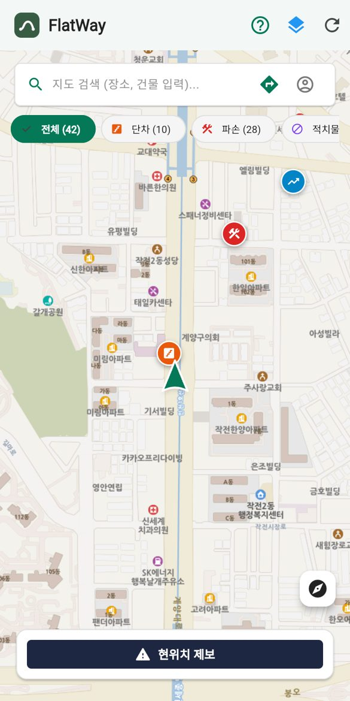
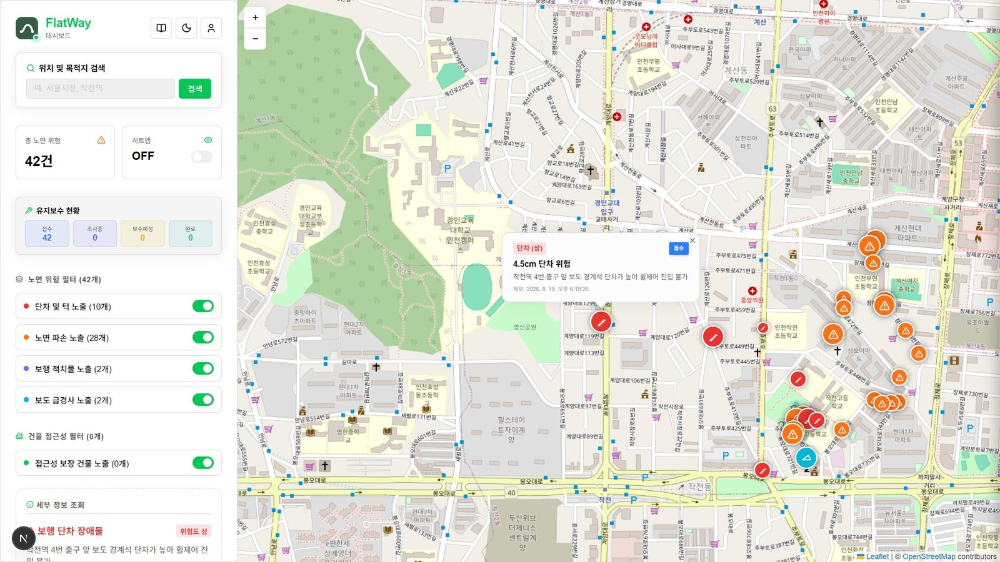
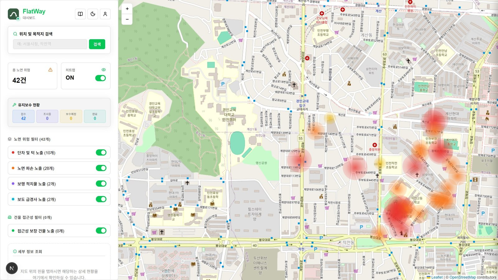
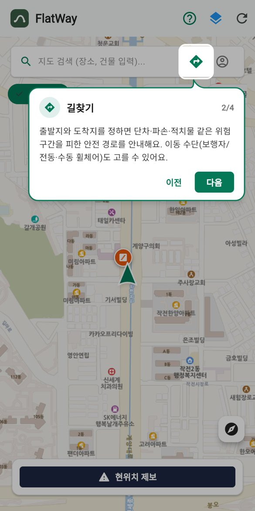
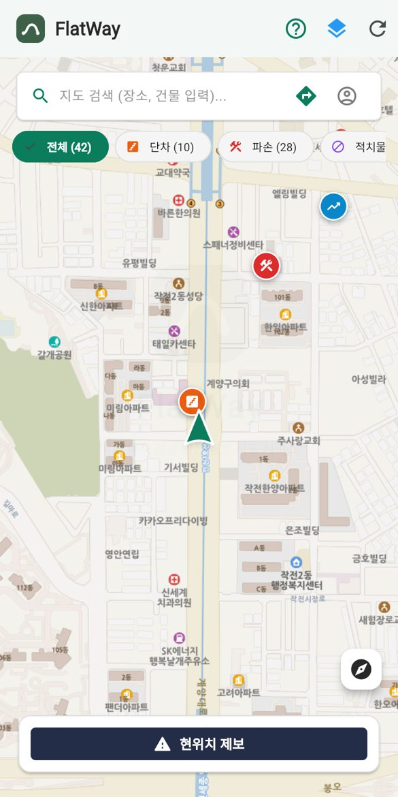
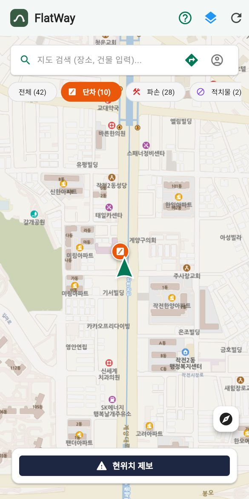
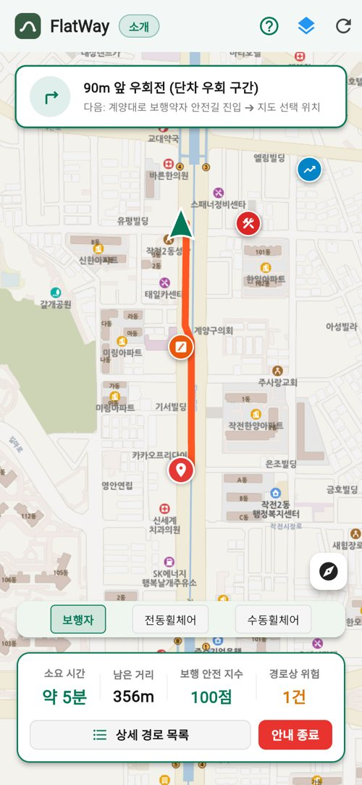
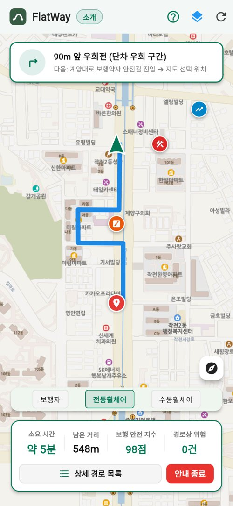

작전여자고등학교 · AI·디지털 기반 문제해결 고도화 발표
모두에게 더 편한 길을 위해
휠체어 사용자 및 보행 약자를 위한
안전 경로 길찾기 앱
2026. 11. 7 2026 인천 AI 미래채움 교육 페스티벌
CHAPTER 1 · 왜 만들었나
학교 근처에서 휠체어 사용자가 보도 단차를
넘지 못해 멈춰 계신 모습을 목격했습니다.
다리를 다친 친구가
혼자 다니기 곤란해하는
모습도 보았습니다.
FlatWay · 작전여자고등학교
02 / 20
CHAPTER 1 · 왜 만들었나
1,613만 명
국내 교통약자 · 전체 인구의 31.5%
20~26만 명
일상적으로 휠체어를 사용하는 인구
FlatWay · 작전여자고등학교
03 / 20
CHAPTER 2 · 사전 조사와 비교
기존 길찾기 지도
지하철 내부와 건물 등의 장소 정보는 있지만, 실제 보도의 단차·경사·파손 정보는 없습니다.
기존의 장애인 전용 앱·공공 데이터
단차·파손·경사를 종합한 경로 안내가 없고, 지자체 편의시설 데이터는 업데이트가 중단되어 더 이상 이용하기 어렵습니다.
FlatWay · 작전여자고등학교
04 / 20
CHAPTER 2 · 사전 조사와 비교
| 기존 길찾기 지도 | 보행안전 지도 | FlatWay | |
|---|---|---|---|
| 단차·파손 반영 | 없음 | 표시만, 우회 불가 | 위험 정보 기반 자동 우회 |
| 이동수단별 경로 | 미분리 | 미분리 | 보행·전동·수동 휠체어 분리 |
| 실시간 반영 | 미지원 | 미지원 | 앱·웹 즉시 동기화 |
FlatWay · 작전여자고등학교
05 / 20
CHAPTER 3 · FlatWay 소개
안드로이드 · 웹
FlatWay 앱
단차·파손 위험을 지도에서 보고, 안전한 길을 안내받고, 바로 제보해요
Supabase
실시간 데이터베이스
제보·사진·계정을 저장하고, 앱과 대시보드에 바로 반영해요
웹
관리자 대시보드
위험이 몰린 곳을 히트맵으로 보고, 수리 현황을 관리해요
만든 도구 Flutter · Next.js · Supabase | 길 계산 오픈스트리트맵 + 오픈소스 경로 엔진(OSRM)
FlatWay · 작전여자고등학교
06 / 20
CHAPTER 3 · FlatWay 소개

위험 지도 보기
단차·파손·적치물·경사 핀을 보고 종류별로 골라 봐요
안전 길찾기
위험을 피해 가는 길을 이동 수단에 맞게 안내해요
현위치 제보
지금 있는 곳의 위험을 사진과 함께 바로 제보해요
이동 수집 (센서)
모바일 앱 전용
켜고 걸으면 가속도 센서가 노면 충격을 감지하고, 기준을 넘으면 GPS 위치와 함께 단차 후보로 자동 기록해요
FlatWay · 작전여자고등학교
07 / 20
CHAPTER 3 · FlatWay 소개
위험 핀을 누르면 상세 정보
히트맵으로 위험 밀집 구역 확인


유형별 필터
단차·파손·적치물·급경사별로 골라 봐요
유지보수 현황
접수 → 조사중 → 보수예정 → 완료
앱과 실시간 연동
앱 제보가 대시보드에 바로 나타나요
FlatWay · 작전여자고등학교
08 / 20
CHAPTER 4 · 고도화
접속
앱을 설치해야 해요
전
링크·QR로 바로 접속
(설치·가입 없음)
후
첫 사용
설명 없이 지도만 열려요
전
말풍선 안내와
10단계 가이드
후
위험 종류
항목이 제각각, 건물 분류까지 섞여 있어요
전
단차·파손
적치물·경사
4종으로 통일
후
길찾기
최단 경로만, 누구나 같은 길이에요
전
위험을 피해
이동 수단별로
다른 길
후
길안내
경로선만 보여요
전
내 위치를 따라
음성으로 안내
후
FlatWay · 작전여자고등학교
09 / 20
CHAPTER 4 · 고도화 ① 바로 접속
휴대폰 카메라로 QR을 스캔하면
설치 없이 바로 열립니다.
temporary-express-flint-jxi3l4g.vercel.app
마지막 장에도 QR이 있어요.
언제든 접속해 볼 수 있어요.
FlatWay · 작전여자고등학교
10 / 20
CHAPTER 4 · 고도화 ② 첫 사용 가이드
처음 접속하면 말풍선 안내
소개 → 길찾기 → 현위치 제보 순서로 4단계
? 버튼으로 언제든 다시
10단계 상세 가이드로 모든 기능 설명
‘다시 보지 않기’ 선택
익숙해지면 안내를 끌 수 있어요


FlatWay · 작전여자고등학교
11 / 20
CHAPTER 4 · 고도화 ③ 위험 카테고리
위험 4종을 아이콘·색으로 구분
단차 · 파손 · 적치물 · 경사
보고 싶은 종류만 골라 보기
칩을 누르면 지도 마커가 바로 걸러져요
제보 화면과 같은 선택지
이름과 아이콘을 하나로 통일했어요
건물 분류는 삭제
위험 정보에 집중하도록 단순화했어요

FlatWay · 작전여자고등학교
12 / 20
CHAPTER 4 · 고도화 ④ 위험 회피 길찾기
고도화 전

최단 경로만
안내해요
356m
위험 1건을
지나가요
고도화 후

위험을 피해
돌아가요
548m
위험 0건,
점수가 가장 낮은 길
FlatWay · 작전여자고등학교
13 / 20
CHAPTER 4 · 고도화 ④ 위험 회피 길찾기
1. 후보 경로 모으기
최단 경로와 대안 경로를 가져와요
2. 점수 매기기
거리에 지나는 위험의 페널티를 더해요
(종류·심각도·단차 높이 반영)
3. 우회로 만들어 비교
가장 위험한 곳의 옆길을 경유해 다시 계산하고, 점수가 가장 낮은 길을 골라요
※ 길 계산: 오픈스트리트맵 도로 데이터 + 오픈소스 경로 엔진(OSRM)
FlatWay · 작전여자고등학교
14 / 20
CHAPTER 4 · 고도화 ④ 위험 회피 길찾기
보행자
넘을 수 있는 단차
제한 없음
경사 · 거의 무시
우회 · 최대 2.5배
속도 · 4.0km/h
전동휠체어
넘을 수 있는 단차
2cm
경사 · 완만하면 괜찮아요
우회 · 최대 2.5배
속도 · 4.5km/h
수동휠체어
넘을 수 있는 단차
1.3cm
경사 · 가파르면 피해요
우회 · 최대 2배
속도 · 3.0km/h
근거: 장애인등편의법 시행규칙(접근로 기울기 1/18~1/12), 미국 ADA 지침(1.3cm), 전동휠체어 제조사 사양, 휠체어 이동 속도 연구
FlatWay · 작전여자고등학교
15 / 20
CHAPTER 4 · 고도화 ⑤ 실시간 길안내
1. 장소 이름으로 검색
출발지·도착지를 이름으로 찾고, 최근 검색을 저장해요
2. 길찾기 오류 수정
검색할 때 화면이 유지되고, 튀어나온 경로와 먼 우회로를 없앴어요
3. 나침반으로 방향 맞추기
나침반을 켜면 지도가 내가 보는 방향에 맞춰 돌아가요
4. 음성 길안내
“90m 앞 우회전”을 소리로도 알려 주고, 남은 시간을 보여줘요
FlatWay · 작전여자고등학교
16 / 20
CHAPTER 4 · 고도화 · 확인
현장 테스트
학교~역 구간을 직접 걸으며 단차·파손·급경사 수집 확인
자동 테스트 21개 작성
이동 수단별 회피, 너무 먼 우회 제한 등을 코드로 검증했어요
실제 도로·제보 데이터로 확인
작전역에서 계양구청까지 경로에서 위험 요소 1건을 피했어요
발견한 문제는 바로 개선
방향 혼동 → 나침반 모드 추가
안내 문구가 팝업에 가려짐 → 즉시 닫히게 수정
FlatWay · 작전여자고등학교
17 / 20
CHAPTER 4 · 고도화 · 한눈에 보기
180회
작업 기록 (8/19부터)
4명
함께 만든 팀원
21개
자동 테스트
5가지
핵심 개선
FlatWay · 작전여자고등학교
18 / 20
CHAPTER 5
긍정적 영향
이동 약자
위험을 피하는 길을 안내받아요
관리하는 곳
위험이 몰린 곳과 수리 현황을 한눈에 봐요
시민 누구나
위험한 곳을 앱·웹으로 바로 제보해요
앞으로의 계획
FlatWay · 작전여자고등학교
19 / 20
모두에게 더 편한 길을 위해
박진아 · 전서영 · 김보민 · 권나윤
감사합니다
지금 접속해 보세요
FlatWay · 작전여자고등학교
20 / 20